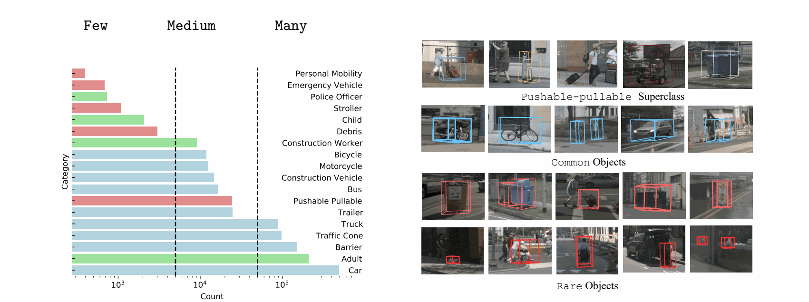

Long-Tailed 3D Benchmarking Protocol

According to the histogram of per-class object counts (on the left), the nuScenes benchmark focuses on the common classes in cyan (e.g., car and barrier) but ignores rare ones in red (e.g., stroller and debris). In fact, the benchmark creates a superclass pedestrian by grouping multiple classes in darkgreen, including the common class adult and several rare classes (e.g., child and police-officer); this complicates the analysis of detection performance as pedestrian performance is dominated by adult. Moreover, the ignored superclass pushable-pullable also contains diverse objects such as shopping-cart, dolly, luggage and trash-can as shown in the top row (on the right). We argue that AVs should also detect rare classes as they can affect AV behaviors. Following “Large-scale long-tailed recognition in an open world”, we report performance for three groups of classes based on their cardinality (split by dotted lines): Many, Medium, and Few.

We highlight common classes in white and rare classes in gold. The standard nuScenes benchmark makes two choices for dealing with rare classes: (1) ignore them (e.g., stroller and pushable-pullable), or (2) group them into coarse-grained classes (e.g., adult, child, construction-worker, police-officer are grouped as pedestrian). Since the pedestrian class is dominated by adult, the standard benchmarking protocol masks the challenge of detecting rare classes like child and police-officer.